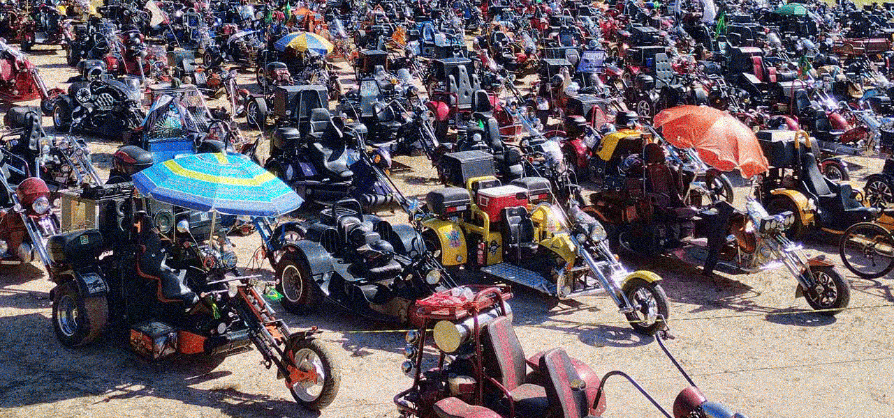
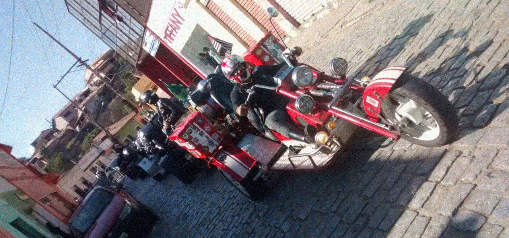
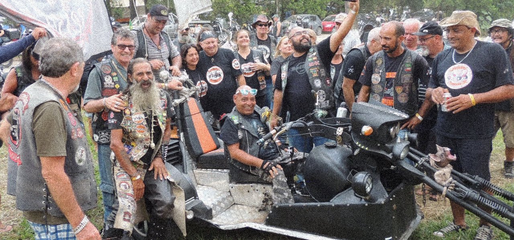
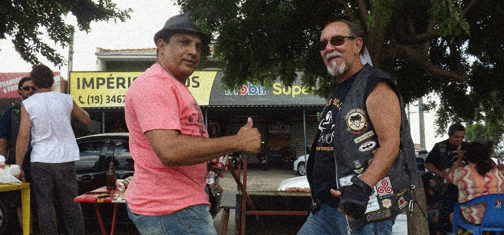
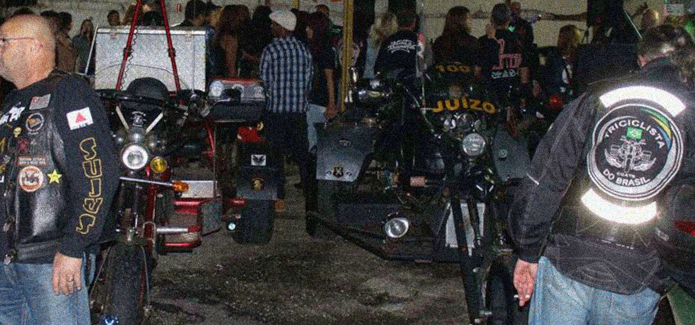
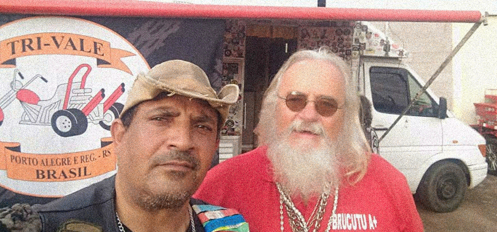

O Perturbador numero 3 - Encontros triunfantes
As Grandes Travessias
Não se sabe exatamente o que são as grandes travessias, mas como o próprio nome já diz, elas aparentam ter como foco principal percorrer a maior distancia possivel, sempre rumo ao sol, e tentando quebrar recordes e as já bem estabelecidas leis da física, concentrando o maior numero de massa no menor espaço possivel!
Fonte: Facebook Original do Zeca - A Trigonometria [imagem editada]
E o que eles fazem durante essa tragetória ainda segue um mistério, mas temos alguns relatos fotograficos dessa absurda jornada transversal:
Fonte: Facebook Original do Zeca - Multirão [imagem editada]
Fonte: Facebook Original do Zeca - Trialegria [imagem editada]
Os encontros de irmãos
A Grande Travessia é quase uma comemoração religiosa, e por isso não acontece o tempo todo, mas os irmãos (e irmãs) sentem falta de um companheirismo, e decidem realizar pequenos encontros mais informais, nos quais desfrutam de um explendoroso aperto de mãos, comemoram o fim da saudade, ou até um aniversario de um irmão que seja muito parceiro.
Fonte: Facebook Original do Zeca [imagem editada]
Fonte: Facebook Original do Zeca [imagem editada]
Fonte: Facebook Original do Zeca [imagem editada]
Continue lendo >
Capitulo 3
O perturbador numero 3